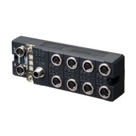
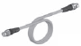
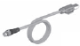
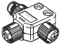
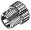
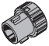
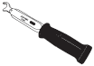

• The standards are abbreviated as follows: U: UL, U1: UL(Class I Division 2 Products for Hazardous Locations),
C: CSA, UC: cULus, UC1: cULus(Class I Division 2 Products for Hazardous Locations), CU: cUL, N: NK, L: Lloyd,
CE: EU Directives, RCM: RCM mark, and KC: KC Registration.
• Contact your OMRON representative for further details and applicable conditions for these standards.
Building Automation
Industrial Automation
Power Automation & Safety


Bangladesh Distributor
GX-ILM08C
GX-series IO-Link Master Unit

IO-Link makes sensor level information visible and solves the three major issues at manufacturing sites! The unit for M12 Smartclick connector can be used in watery, and dusty environments.
about this Product Family
Related Contents
- Automation Systems
- Features
- Lineup
- Specifications
- Dimensions
- Catalog
last update: September 12, 2016
International Standards
EtherCAT Slave Terminals IO-Link Master Unit
| Product Name | Specification | Model | Standards | ||
|---|---|---|---|---|---|
| Environmental
resistance |
Number of
IO-Link ports |
I/O connection
terminals |
|||
| GX-series IO-Link
Master Unit |
IP67 | 8 | M12 connector
(A-cording, female) |
GX-ILM08C | CE, RCM, KC |
Peripheral Devices
Recommended EtherCAT Communications Cables
Use Straight STP (shielded twisted-pair) cable of category 5 or higher with double shielding (braiding and aluminum foil tape) for EtherCAT.
| Item | Appearance | Recommended
manufacturer |
Cable
length (m) |
Model |
|---|---|---|---|---|
| Cable with Connectors on Both Ends
Shield Strengthening cable Wire Gauge and Number of Pairs: AWG22, 2-pair Cable Cable color: Black |
Smartclick
(M12 Straight/ M12 straight)  |
OMRON | 0.5 | XS5W-T421-BM2-SS |
| 1 | XS5W-T421-CM2-SS | |||
| 2 | XS5W-T421-DM2-SS | |||
| 3 | XS5W-T421-EM2-SS | |||
| 5 | XS5W-T421-GM2-SS | |||
| 10 | XS5W-T421-JM2-SS | |||
| Cable with Connectors on Both Ends
Rugged type Shield Strengthening cable Wire Gauge and Number of Pairs: AWG22, 2-pair Cable Cable color: Black |
Smartclick
(M12 Straight/ RJ45 straight)  |
OMRON | 0.5 | XS5W-T421-BMC-SS |
| 1 | XS5W-T421-CMC-SS | |||
| 2 | XS5W-T421-DMC-SS | |||
| 3 | XS5W-T421-EMC-SS | |||
| 5 | XS5W-T421-GMC-SS | |||
| 10 | XS5W-T421-JMC-SS |
Note: For details, Contact your OMRON representative.
Power Supply Cables
| Item | Appearance | Recommended
manufacturer |
Cable
length (m) |
Model |
|---|---|---|---|---|
| Connector connected to cable,
socket on one cable end Fire-retardant, Robot cable |
Smartclick (M12 Straight) | OMRON | 1 | XS5F-D421-C80-F |
| 2 | XS5F-D421-D80-F | |||
| 3 | XS5F-D421-E80-F | |||
| 5 | XS5F-D421-G80-F | |||
| 10 | XS5F-D421-J80-F | |||
| Connectors connected to cable,
socket and plug on cable ends Fire-retardant, Robot cable |
Smartclick
(M12 Straight/M12 straight) |
OMRON | 1 | XS5W-D421-C81-F |
| 2 | XS5W-D421-D81-F | |||
| 3 | XS5W-D421-E81-F | |||
| 5 | XS5W-D421-G81-F | |||
| 10 | XS5W-D421-J81-F |
Note: Refer to the Round Water-resistant Connectors in the category of Sensor I/O Connector/Sensor Controller on your local OMRON website for details.
Sensor I/O Connectors
Order a cable with a connector on both ends to connect a sensor.
| Item | Appearance | Recommended
manufacturer |
Cable
length (m) |
Model |
|---|---|---|---|---|
| Connectors connected to cable,
M8 socket and M12 plug on cable ends Fire-retardant, Robot cable |
M8 screw- M12 Smartclick
(M8 Straight/M12 straight) |
OMRON | 0.2 | XS3W-M42C-4C2-A |
| Connectors connected to cable,
socket and plug on cable ends Fire-retardant, Robot cable |
Smartclick
(M12 Straight/M12 straight) |
OMRON | 1 | XS5W-D421-C81-F |
| 2 | XS5W-D421-D81-F | |||
| 3 | XS5W-D421-E81-F | |||
| 5 | XS5W-D421-G81-F | |||
| 10 | XS5W-D421-J81-F |
Note: Refer to the Ordering Information in the catalog of the sensor to connect or the Sensor I/O Connectors/Sensor Controllers on your local OMRON website for details.
Power Supply T-Joint Connector
This connector is used when branching a GX-type Unit power supply.
| Item | Appearance | Specification | Connector type | Model |
|---|---|---|---|---|
| XS5R Plug/Socket
T-Joint Connector |
 | M12 | Smartclick connector | XS5R-D427-5 |
Waterproof Cover for Connectors
This is a waterproof cover for unused M12 GX connectors (female).
When you use this waterproof cover, you can maintain the IP67 protective structure.
The following two types of covers are available. Either one can be mounted on an EtherCAT communications connector or I/O connector.
| Item | Appearance | Specification | Connector type | Materials | Model |
|---|---|---|---|---|---|
| M12 Threaded Waterproof
Cover *1 |
 | M12 | Screw-type
connector |
Brass/
nickel plated |
XS2Z-22 |
| Smartclick Waterproof Cover *2 |  | M12 | Smartclick
connector |
PBT | XS5Z-11 |
*1. When mounting the M12 Threaded Waterproof Cover on a connector, always tighten it to a torque of 0.39 to 0.49 N·m.
*2. When mounting a Smartclick Waterproof Cover on a connector, torque management is not required.
*2. When mounting a Smartclick Waterproof Cover on a connector, torque management is not required.
Tool for M12 Threaded Connectors
The tool for tightening M12 Threaded Connectors is used when tightening to a specified torque.
| Item | Appearance | Model |
|---|---|---|
| Torque Wrench |  | XY2F-0004 |
Software
Automation Software Sysmac Studio
Please purchase a DVD and required number of licenses the first time you purchase the Sysmac Studio. DVDs and licenses are available individually. Each model of licenses does not include any DVD.
| Product
name |
Specification | Model | Stand-
ards |
||
|---|---|---|---|---|---|
| Number of
licenses |
Media | ||||
| Sysmac
Studio Standard Edition Ver.1.[][] |
The Sysmac Studio is the software that provides an
integrated environment for setting, programming, debugging and maintenance of machine automation controllers including the NJ/NX-series CPU Units, NY-series Industrial PC, EtherCAT Slave, and the HMI. Sysmac Studio runs on the following OS. Windows 7 (32-bit/64-bit version)/Windows 8 (32-bit/ 64-bit version)/Windows 8.1 (32-bit/64-bit version)/ Windows 10 (32-bit/64-bit version) The Sysmac Studio Standard Edition DVD includes CX- Configurator FDT to set up IO-Link Master Units and IO-Link devices. For details, refer to the Sysmac Integrated Catalogue (P072). |
---
(Media only) |
DVD | SYSMAC-SE200D | --- |
| 1 license * | --- | SYSMAC-SE201L | |||
* Multi licenses are available for the Sysmac Studio (3, 10, 30, or 50 licenses).
last update: September 12, 2016